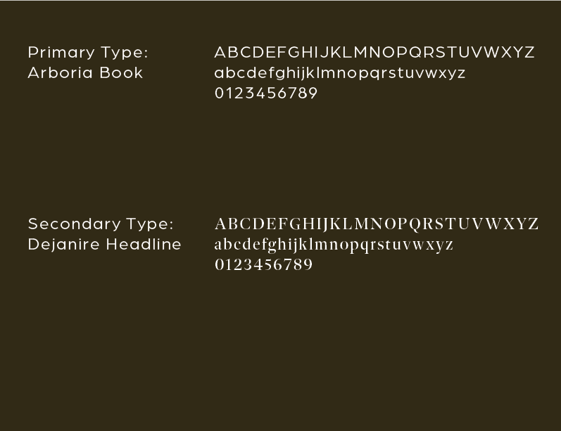
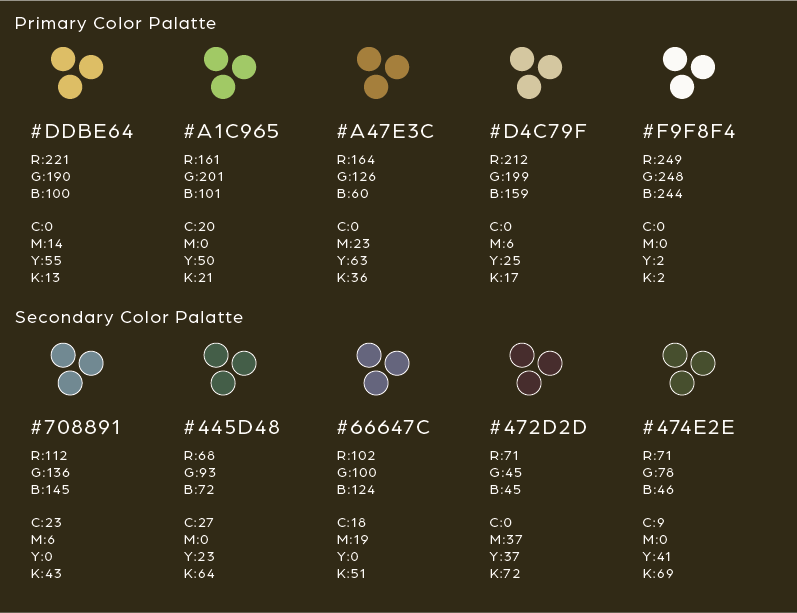
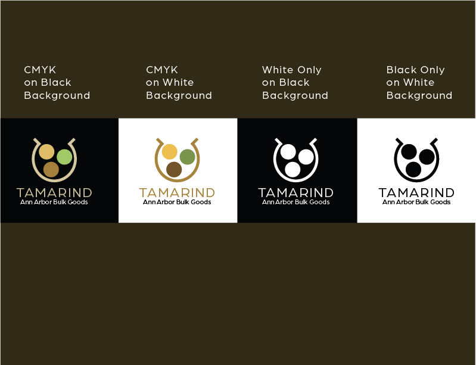
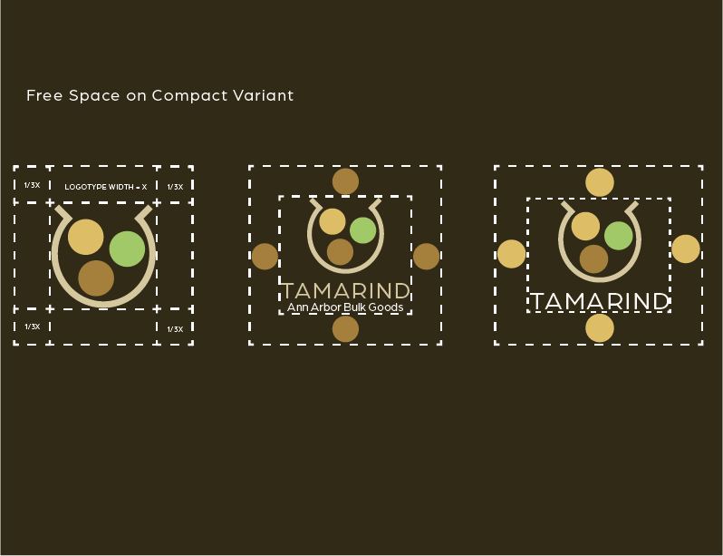
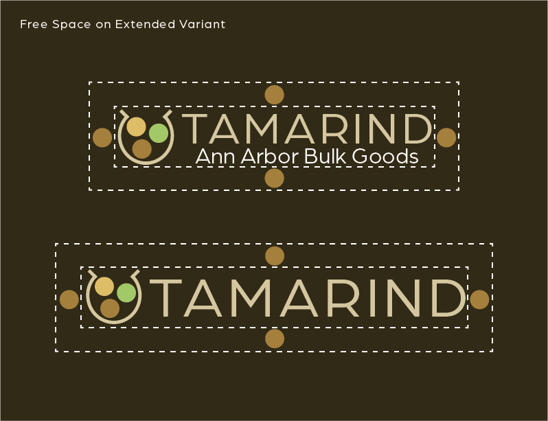

Background
An Ann Arbor Bulk Goods store needed a brand overhaul to entice customers
Solution
An identity package including logo, typeface selection, colors, and mobile view was created
Logo
The Logo for this identity represents a bag of bulk goods. It is comprised of symmetric shapes.
Typography
The Typeface selected for this identity is Arboria Book. It is simple yet elegant which matches the brand image.
Design & Colors
The Primary Colors selected for this identity include muted versions of: gold to represent quality, green to represent eco-friendly, and brown to represent sustainability.
Color Conversions
Below is the Logomark color conversions on different backgrounds.
Free Space
The free space selected for the logomark is 1/3 the logomark width.
 Wireframes